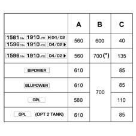
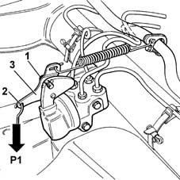

3330C62 load proportioning valve control - check and adjust
- Path
- Procedures > 33 BRAKING SYSTEM > 3330 HYDRAULIC BRAKING SYSTEM > 3330C brake pump, reservoir and load proportioning valve > 3330C62 load proportioning valve control - check and adjust
- Kind
- repair procedure (removal / refitting; the operation number is the code)
- Applies to
- all engines; all production periods
- Interactive page
- https://sloeber94.github.io/elrnDB-fMltpl/en/#/2891627
Applies to: all engines; all production periods
The load proportioning valve should be adjusted with the wheels fitted on the vehicle, resting on the ground, and with a full fuel tank (condition A described in the table).
1. For the correct calibration of the load proportioning valve, the table below gives the value C, expressed in Kg, to be placed in the luggage compartment according to the version.

Applies to: all engines; all production periods
A = Weight on rear axle with full fuel tank (Kg).
B = Total weight on rear axle required for the calibration of the load proportioning valve (Kg).
C = Additional mass in luggage compartment (Kg).
(*) For versions with rear disc brakes only.
1. Loosen the bracket fixing bolt.
2. Apply a vertical load P1, to the bracket eyelet, which varies according to the type of rear braking system.
For versions fitted with rear drum brakes, apply a vertical load P1 of 5.5 0.01 Kg
For versions fitted with rear disc brakes, apply a vertical load P1 of 6 Kg
3. Keeping the bracket in this position, tighten the bolt loosened previously in point one to the recommended torque.
 | Fastening | Component | Ø | Value (daNm) |
|---|---|---|---|---|
1 | Bolt | LOAD PROPORTIONING VALVE | M8 | 2 |
